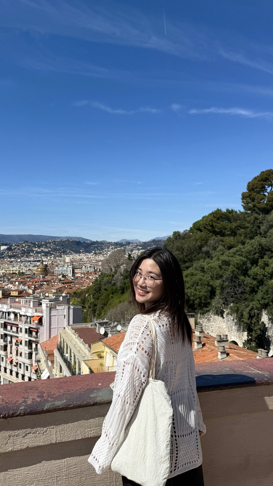
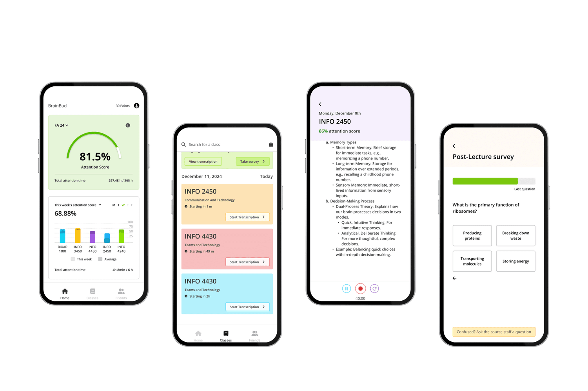
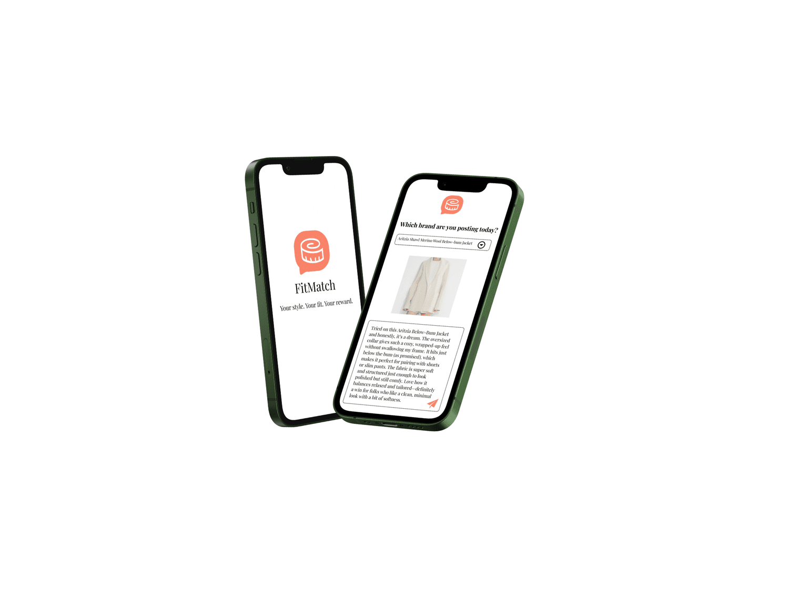
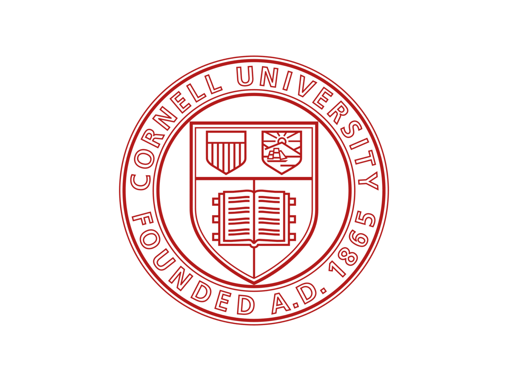
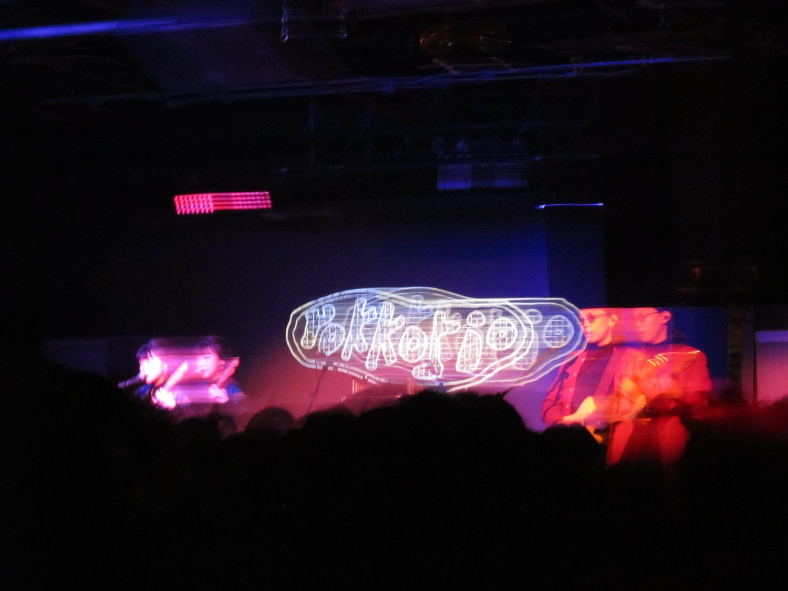

A collection of work & little things
UX design · Research · Everyday curiosity
Hello, I’m Penny.
Designing for a
more human everyday.
I explore how technology can bring empathy, connection, and positive experiences into people’s lives.
Information Science · CornellA little about me ↗

Open a conversationGood things start
Good things start
with a hello.

BrainBud
Supporting students with attention challenges through mindful, community-driven learning.

HopIn
Making shared transportation more affordable, inclusive, and connected.

FitMatch
A more supportive, authentic way to shop for clothes online.

Architectural Robotics Lab
Exploring adaptive spaces, embodied interactions, and human connection.

Shanshiping Village
A bilingual online museum of memory, resilience, and cultural continuity.

Away from the screen
A different way of seeing.
Intuitive. Inclusive.My approach to design
A little more human.